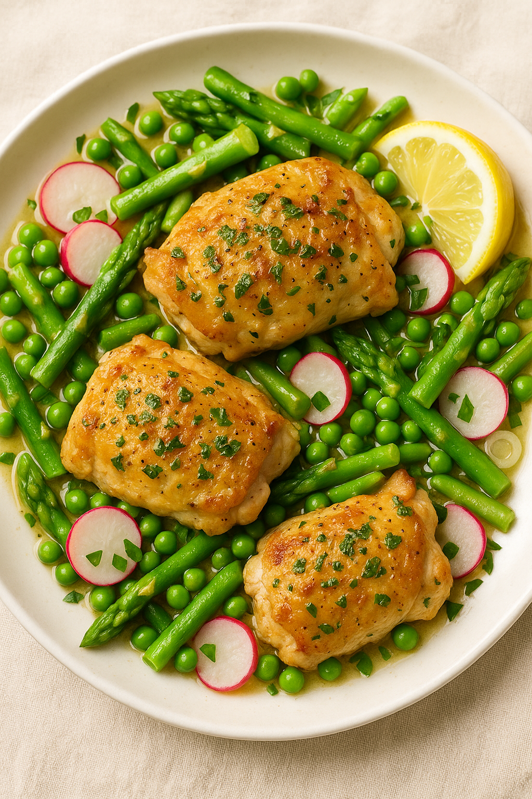

This dish is a delightful combination of juicy chicken, vibrant asparagus, and sweet peas, all brought together with a tangy lemon butter sauce. It's a perfect springtime meal that is both healthy and delicious.
Pair it with a light salad or some crusty bread for a complete meal. Enjoy the fresh flavors of spring with this easy-to-follow recipe!